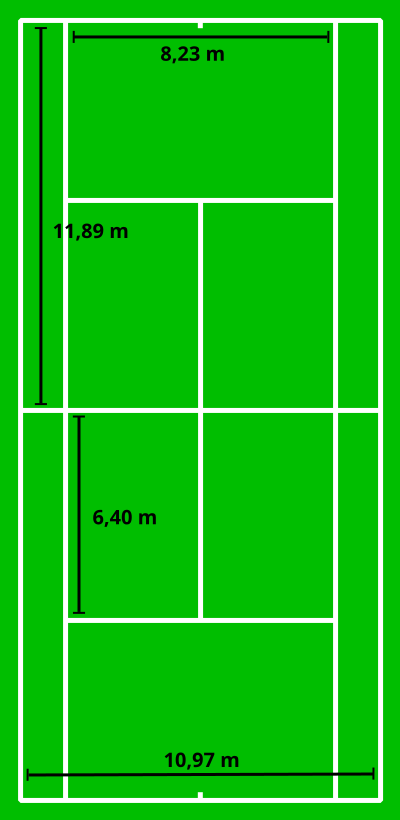
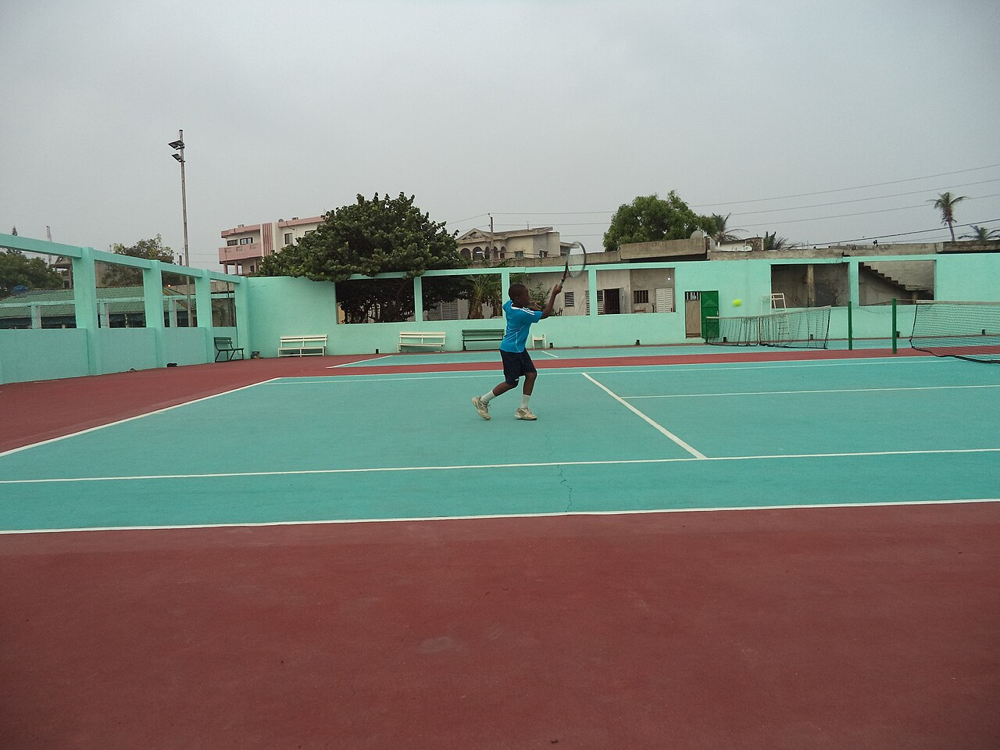

Step 1 — Feed a friendly ball
Start with a hand feed or a gentle underarm. Aim for 5–7 shots over the net in a row. No winners in the warm-up.
Basics 6 of 6
This is what we actually do on Saturday. Keep the ball in play.
Start with a hand feed or a gentle underarm. Aim for 5–7 shots over the net in a row. No winners in the warm-up.

Cross-court (the long diagonal) is safer than down the line. Stay on one diagonal for a block of time: forehands only, then backhands only.

Move your feet. Call “yours / mine” in doubles. If the ball is dying, take it early. Kids can collect balls and join a short rally between games.

When the rally is stable, play to 7 points. Say the score out loud. Then pick up every ball — the next booking is coming.